こんな気持ち、ありませんか？
- 預金のままだと、物価に負けて目減りしそうで落ち着かない
- でも、運用して減らすのはもっと怖い
- 銀行の窓口で勧められた商品は、なんとなく断ってしまった
- 年金と退職金で何歳まで暮らせるのか、計算できない
- 気軽に相談できる、詳しい知り合いがいない
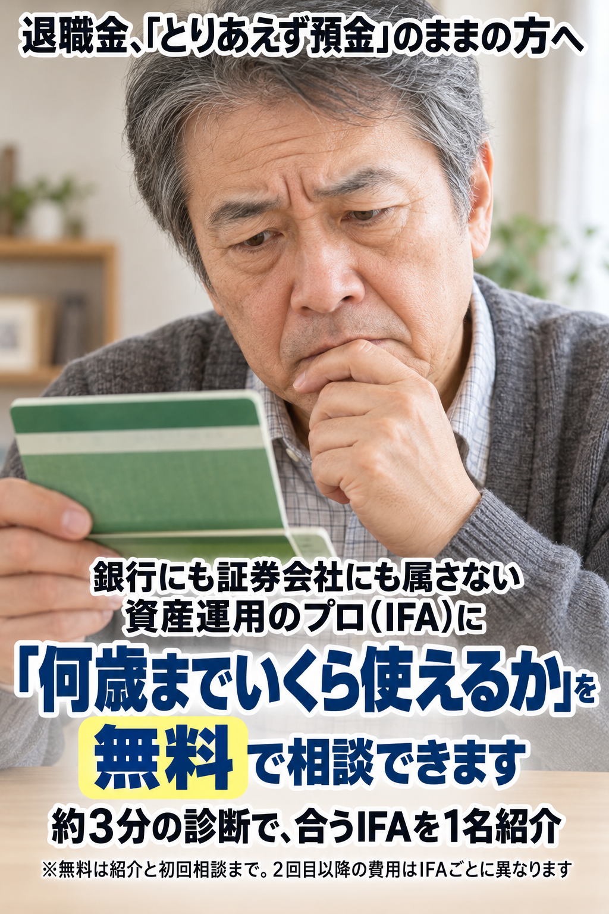
退職金を「とりあえず預金」 にしている方へ。 銀行にも証券会社にも属さないプロに、 “何歳までいくら使えるか” を無料で聞く方法
退職金が振り込まれたあと、 こんな気持ちのまま 止まっていませんか？
ひとつでも当てはまったら、 この先の漫画を読んでみてください。 同じところで止まっていた、 ある60歳の男性の話です。
※登場人物・場面はイメージです。
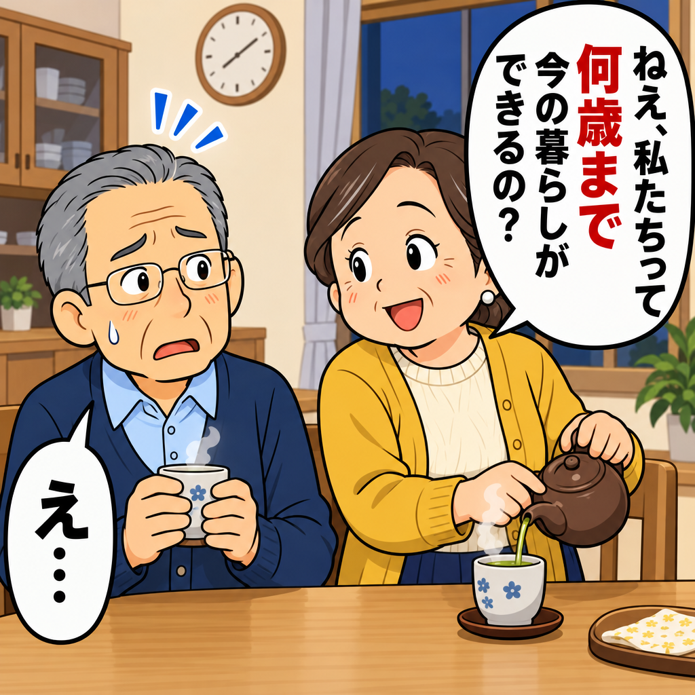
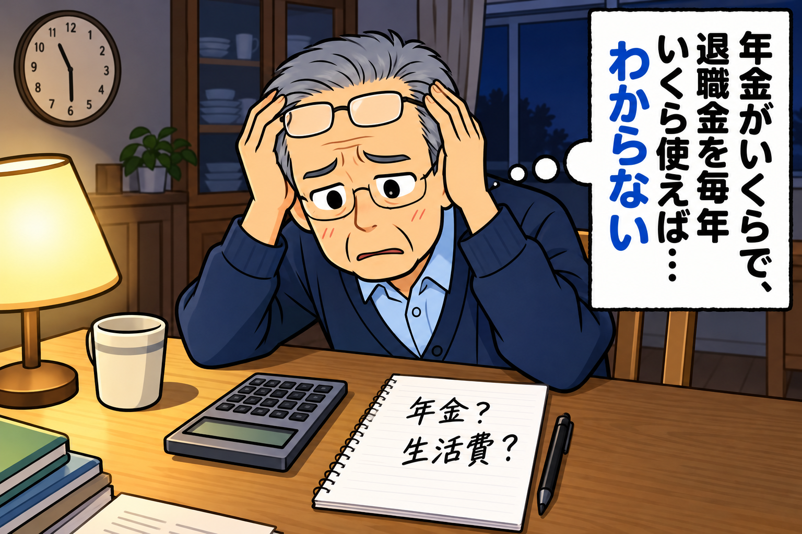
退職金は、 一生に一度あるかないかの まとまったお金。 だからこそ、 「失敗したくない」と思うほど 手が止まってしまう。
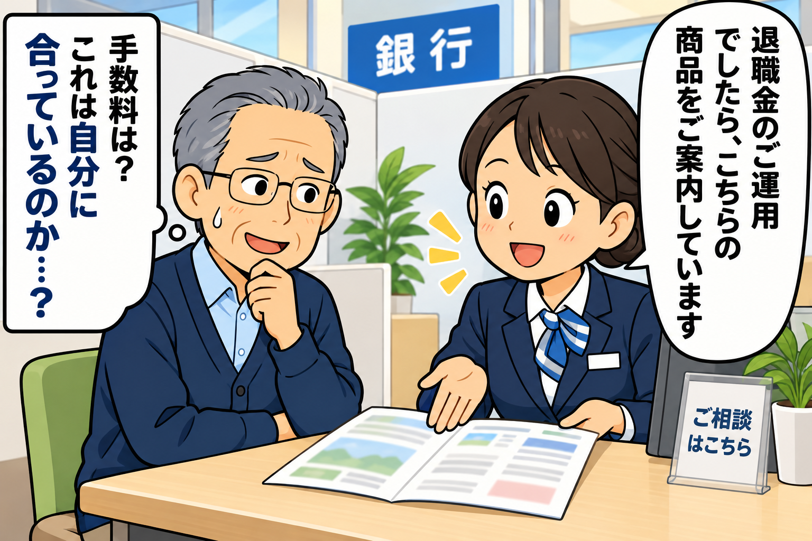
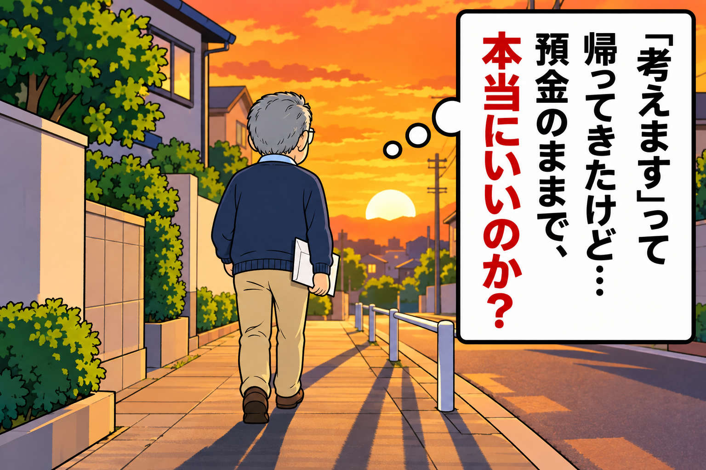
窓口で勧められても、 それが自分に合うのか 判断する材料がない。 本やネットで調べても、 「自分の場合はどう分けるか」 までは書いていない。
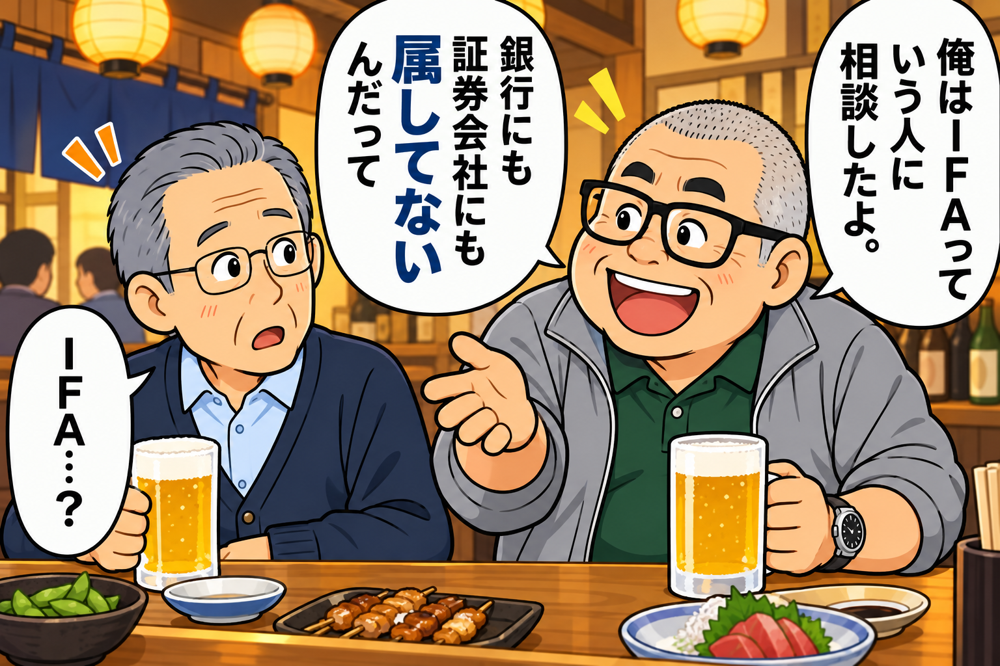
IFAは、 銀行や証券会社に属さずに 資産運用の相談にのる アドバイザーのことです。
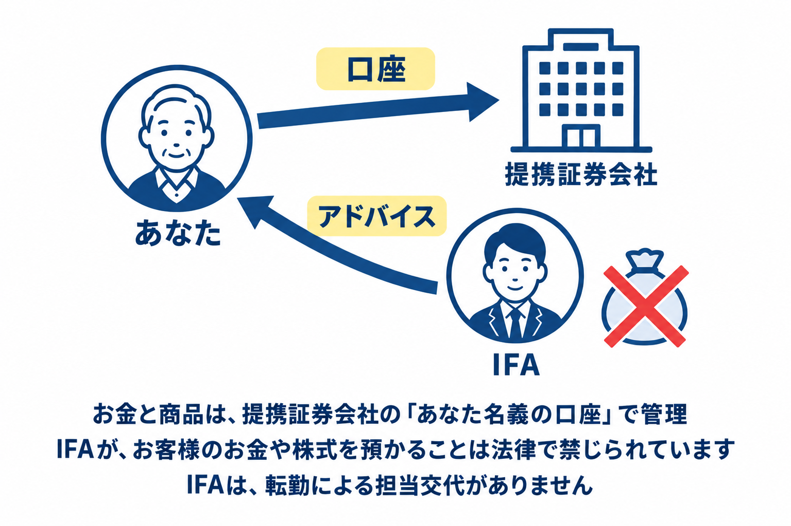
ただ、IFAを自分で探して 選ぶのは大変。 そこで役立つのが、 合うIFAを紹介してくれる 「資産運用ナビ」です。
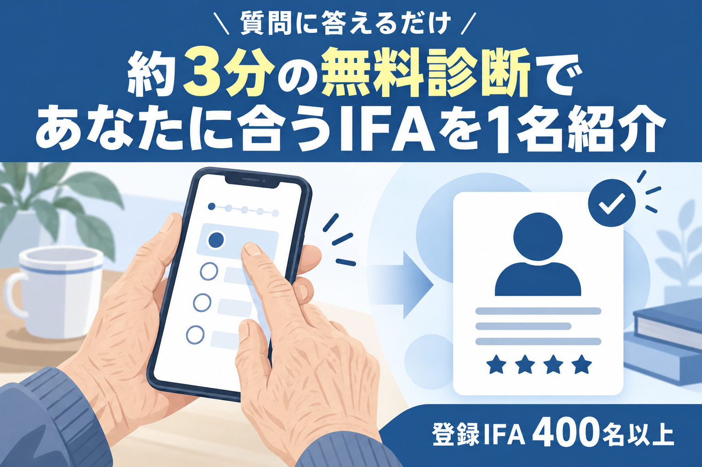
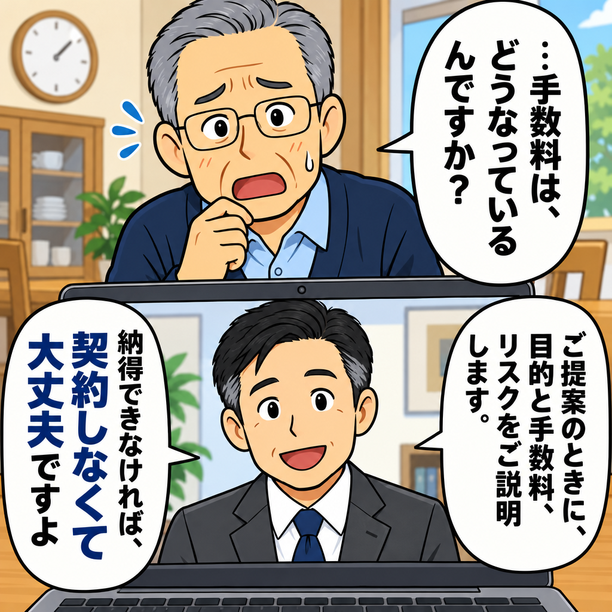
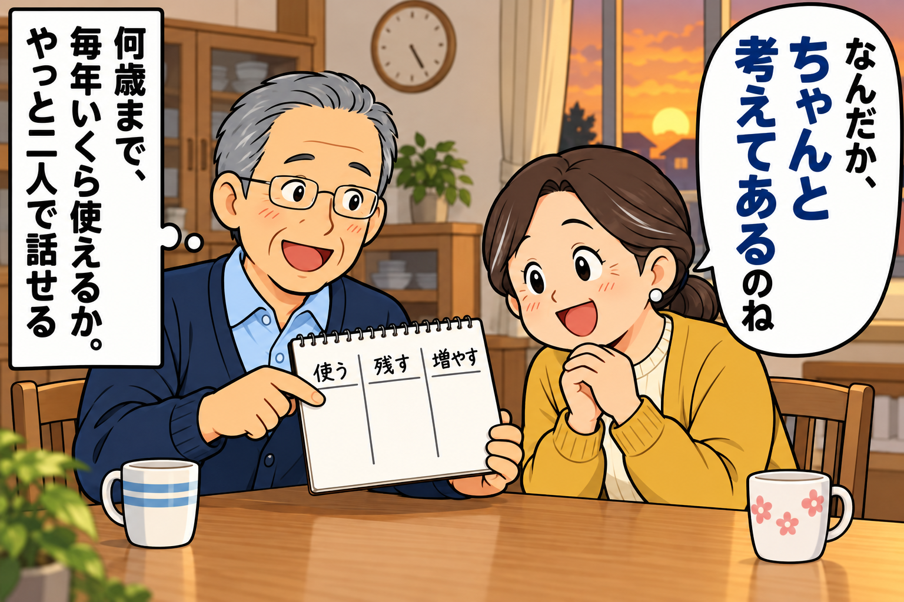
和夫さんがいちばん ほっとしたのは、 「その場で決めなくていい」 と分かったことでした。
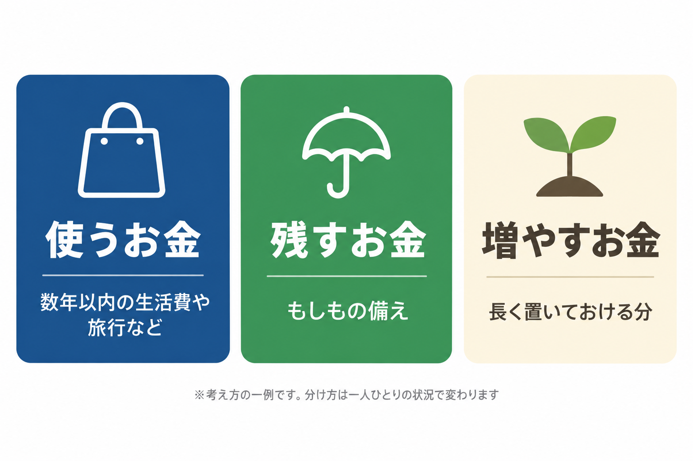
「本当に、売り込まれないの？」 と気になる方へ。 利用者アンケートの結果と、 利用者の声です。
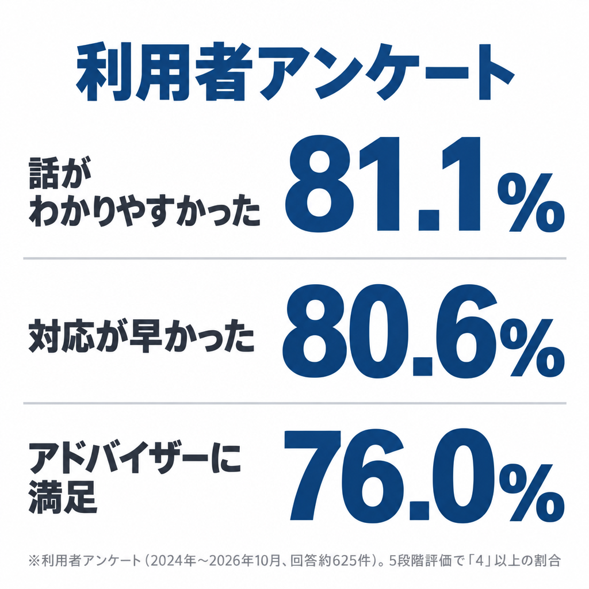
結論を急がされず話しやすかった
こちらの考えを尊重してくれた
将来の資金計画が見えやすかった
※個人の感想であり、成果を保証するものではありません。
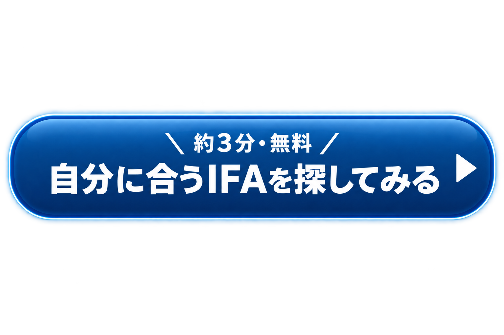
運用経験・目的・今の資産状況などの 簡単な質問に答えます。 答えてもその場で相談は始まらず、 推薦を見てから申し込むか決められます。
4つのステップで、相談まで
質問に答える（約3分）
運用経験・目的・今の資産状況などに答えます。
推薦されたIFAを確かめる
経験年数・得意分野・提携証券会社をプロフィールで確認。申し込むかはここで決められます。
無料相談を申し込む
申し込んだあとに、日程を調整します。
オンラインで面談
自宅から相談できます。対面や電話に対応するIFAもいます。
ご回答ありがとうございました。
ひとつでも気になる答えがあったら、 まずは合うIFAを確かめる ところから。
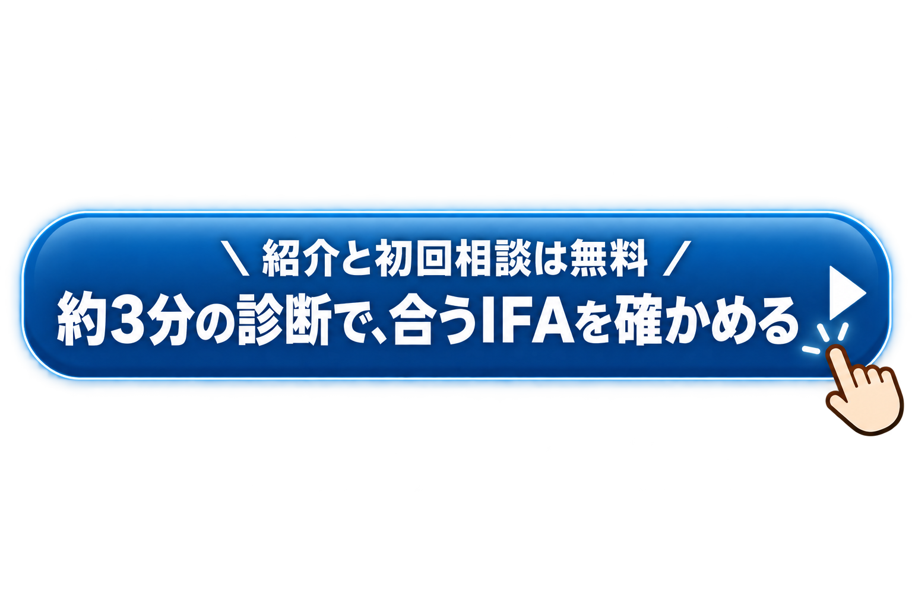
退職金は、 急いで決めなくていいお金です。
でも、置いたままでは 「何歳までいくら使えるか」は いつまでも分かりません。
まずは3分、 自分に合う相談相手を 確かめるところから。
※本記事は一般的な情報提供を目的としており、特定の金融商品の勧誘を目的とするものではありません。投資にはリスクがあり、元本を下回る可能性があります。 ※漫画の登場人物・場面はイメージです。